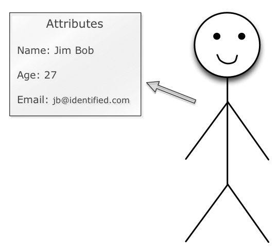
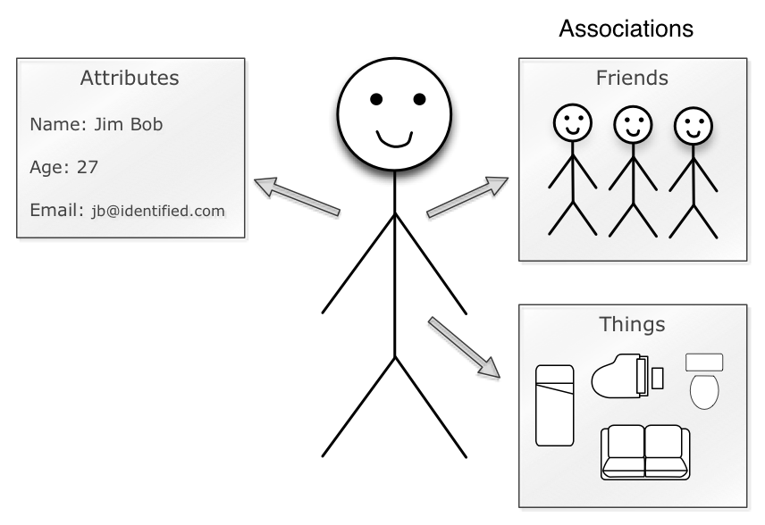
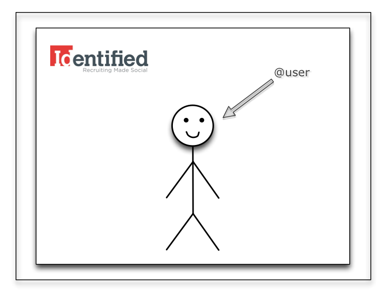
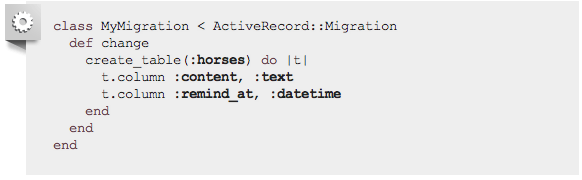
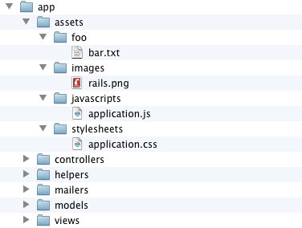
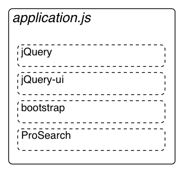
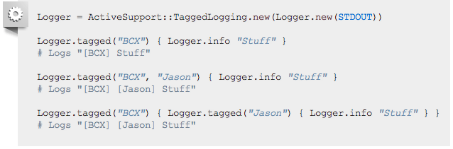

Rails 3
is effin awesome.
Phil Monroe
Rails Review
- Model - View - Controller
- App Structure
Model
- Noun
- Person/Place/Thing
Model Ex. - User

Model Ex. - User
Model Ex. - User

Model Ex. - User

Models in DB
View
- How you want to display your models.
View Ex. - User

View Ex. - User

Controller
- Get something to show.
Controller Ex. - User

App Structure
- Convention over Configuration!
Rails 3.1
- HTTP Streaming
- Reversible Migrations
- Asset Pipeline
- jQuery as the default JavaScript library
HTTP Streaming
- Start sending response immediately
- Respond during rendering
- Get the client to fetch assets quickly!
Reversible Migrations
- Rails predicts how to perform migration.
- 
Asset Pipeline
- Powered by Sprockets
- Similar to JAMMIT
- Provide easy helper methods to link to assets
- Keeps code structured
Asset Pipeline - Structure

Asset Pipeline - Combine
- Manifest file defines files to include
- Keeps code structured in development
- Minimize HTTP requests in production
Asset Pipeline - Combine

Asset Pipeline - Preprocess
- Allow preprocessing of CSS and JavaScript
- Just add preprocessor extension to file name
- Sass, CoffeScript, ERB, and more...
- Ex:
sassy-pants.css.scss
Asset Pipeline - Minify
- Strip whitespace
- Rename JavaScript functions and variables
- Reduce the number of characters to save data
Asset Pipeline - Compress
- tar and gzip the CSS and JS
- Make the transfer time as small as possible
Asset Pipeline - Cache
- Append filenames with MD5 Hash of contents
- Automatically figured out when using rails helpers
- Super easy caching
jQuery by default
Rails 3.2
- Faster Development Mode
- New Routing Engine
- Automatic Query Explains
- Tagged Logging
Automatic Query Explains
- Log query if taking longer than 1/2 sec.
Tagged Logging
